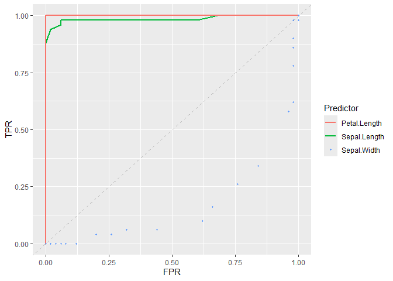

Overview
ROCnGO provides a set of tools to study a classifier performance by using ROC curve based analysis. Package may address tasks in these type of analysis such as:
- Evaluating global classifier performance.
- Evaluating local classifier performance when a high specificity or sensitivity is required, by using different indexes that provide:
- Better interpretation of local performance.
- Better power of discrimination between classifiers with similar performance.
- Evaluating performance on several classifier simultaneously.
- Plot whole, or specific regions, of ROC curves.
Installation
Last version of ROCnGO can be installed from its GitHub repository with:
# install.packages("devtools")
devtools::install_github("pabloPNC/ROCnGO")Usage
library(ROCnGO)
# Iris subset
iris_subset <- iris[iris$Species != "versicolor", ]
# Select Species = "virginica" as the condition of interest
iris_subset$Species <- relevel(iris_subset$Species, "virginica")
# Summarize a predictor over high sensitivity region
summarize_predictor(
iris_subset,
predictor = Sepal.Length,
response = Species,
threshold = 0.9,
ratio = "tpr"
)
#> # A tibble: 1 × 5
#> auc pauc np_auc fp_auc curve_shape
#> <dbl> <dbl> <dbl> <dbl> <chr>
#> 1 0.985 0.0847 0.847 0.852 Concave
# Summarize several predictors simultaneously
summarize_dataset(
iris_subset,
predictor = c(Sepal.Length, Sepal.Width, Petal.Length, Petal.Width),
response = Species,
threshold = 0.9,
ratio = "tpr"
)
#> $data
#> # A tibble: 4 × 6
#> identifier auc pauc np_auc fp_auc curve_shape
#> <chr> <dbl> <dbl> <dbl> <dbl> <chr>
#> 1 Sepal.Length 0.985 0.0847 0.847 0.852 Concave
#> 2 Sepal.Width 0.166 0.0016 0.0160 0.9 Hook under chance
#> 3 Petal.Length 1 0.1 1 1 Concave
#> 4 Petal.Width 1 0.1 1 1 Concave
#>
#> $curve_shape
#> # A tibble: 2 × 2
#> curve_shape count
#> <chr> <int>
#> 1 Concave 3
#> 2 Hook under chance 1
#>
#> $auc
#> # A tibble: 2 × 3
#> # Groups: auc > 0.5 [2]
#> `auc > 0.5` `auc > 0.8` count
#> <lgl> <lgl> <int>
#> 1 FALSE FALSE 1
#> 2 TRUE TRUE 3
# Plot ROC curve of classifiers
plot_roc_curve(iris_subset, predictor = Sepal.Length, response = Species) +
add_roc_curve(iris_subset, predictor = Petal.Length, response = Species) +
add_roc_points(iris_subset, predictor = Sepal.Width, response = Species) +
add_chance_line()